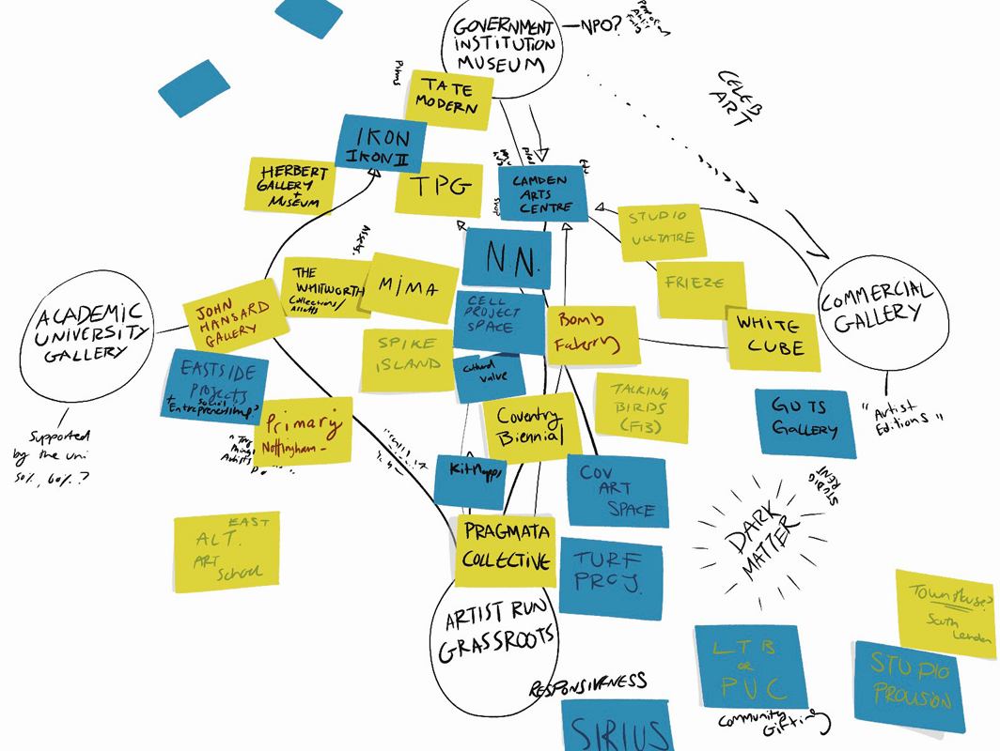
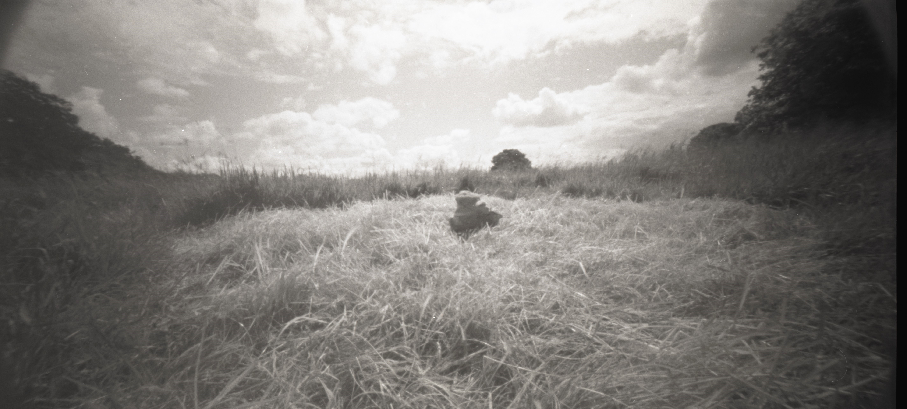
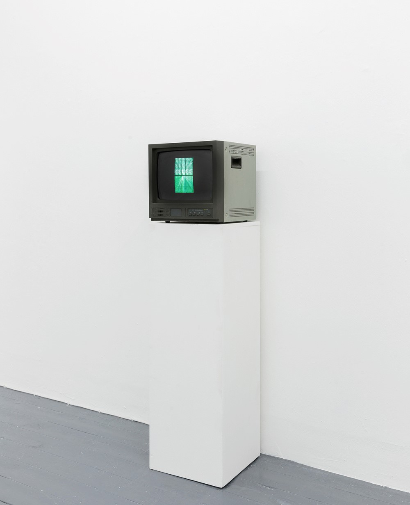

Toby Tobias Kidd
Home
Selected Work
About
Contact

Art Activa
2024 – ongoing

Growing Sculptures from the Land
2019 – ongoing
Lift Your Hands and Voices
2024

The Blossom
2020
Park Life
2025
Pragmata Collective
2021 – ongoing